Thực hiện mạch in thủ công (Mạch nhấp nháy LED hình trái tim)
Những vật dụng cần chuẩn bị để làm mạch PCB tại nhà:
Phíp đồng
Cuộn phim bóng hoặc giấy bìa tạp chí (Trong bài viết sử dụng cuộn phim bóng)
Hóa chất ăn mòn đồng (Ferric Chloride hoặc Hydrogen Peroxide) (Trong bài viết sử dụng Ferric Chloride FeCl3)
Bùi nhùi sắt
Hai thau hoặc hoặc khay để chứa hóa chất rửa mạch (1 nhỏ và 1 lớn)
Một máy khoan cầm tay (một lưỡi cắt nhỏ để cắt mạch)
Bút lông
Aceton (xăng thơm)
Máy in Laser
Phần mềm thiết kế PCB trên máy tính
Bước 1: Thiết kế bảng mạch in
Chuẩn bị schematic
Lên ý tưởng và phác thảo sơ bộ: Bạn nên liệt kê những yêu cầu cụ thể cho mạch PCB mà bạn muốn làm. Dựa trên nhu cầu, hãy phác thảo sơ đồ mạch cơ bản trên giấy.
Sử dụng tài nguyên có sẵn:
Tìm kiếm trên Internet những mẫu PCB được chia sẻ miễn phí từ các cộng đồng thiết kế. Điều này không chỉ tiết kiệm thời gian mà còn cung cấp những ý tưởng thú vị cho dự án của bạn.
Một số trang web và diễn đàn công nghệ thường chia sẻ các tệp thiết kế PCB sẵn sàng để tải xuống.
Dùng phần mềm chuyên dụng: Nếu bạn muốn tạo ra một sơ đồ mạch theo ý tưởng riêng, hãy sử dụng các phần mềm thiết kế PCB phổ biến:
Proteus: Thích hợp cho người mới bắt đầu, với giao diện đơn giản và cộng đồng hỗ trợ rộng rãi.
OrCAD và Allegro: Mạnh mẽ, phù hợp cho các dự án phức tạp.
Eagle: Được nhiều người yêu thích nhờ tính linh hoạt.
Altium Designer: Chuyên nghiệp, phù hợp cho các dự án yêu cầu độ chính xác cao.
Note
Lời khuyên cho bước chuẩn bị schematic:
Hãy dành thời gian để kiểm tra kỹ sơ đồ mạch trước khi chuyển sang bước tiếp theo. Một sơ đồ mạch chính xác là nền tảng để tạo ra một PCB hoàn thiện, giảm thiểu lỗi trong quá trình thực hiện.
Trao đổi với các cộng đồng kỹ thuật trực tuyến (ví dụ: PIF) để nhận được góp ý và mẹo từ những người có kinh nghiệm.
Mạch nguyên lý (Schematic) của mạch led trái tim:
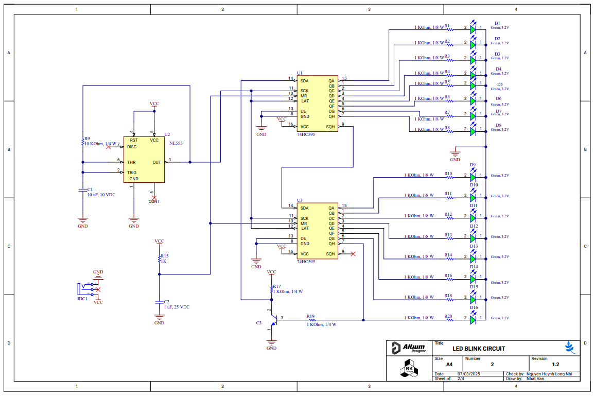{kind=link}
Schematic tại đây:
Layout PCB
PCB Layout là bước quan trọng giúp bạn chuyển đổi sơ đồ mạch (schematic) thành hình ảnh thực tế của bảng mạch in (PCB). Đây là giai đoạn tạo ra thiết kế cụ thể cho từng lớp mạch, đường dẫn tín hiệu, vị trí linh kiện, và các chi tiết cần thiết để sản xuất PCB.
Các bước chuẩn bị PCB Layout:
Note
Nghiên cứu sơ đồ mạch (schematic):
Trước khi bắt đầu thiết kế layout, hãy đảm bảo sơ đồ mạch đã được kiểm tra kỹ lưỡng. Việc đảm bảo không có lỗi ở sơ đồ mạch sẽ giúp tránh được những vấn đề khi triển khai PCB.
Lựa chọn phần mềm thiết kế: Hãy chọn công cụ thiết kế PCB mà bạn cảm thấy quen thuộc và phù hợp với nhu cầu dự án. Một số phần mềm phổ biến:
Proteus: Dễ sử dụng, phù hợp với người mới.
Altium Designer: Được sử dụng chuyên nghiệp trong công nghiệp.
Eagle: Linh hoạt và được cộng đồng yêu thích.
KiCad: Phần mềm mã nguồn mở, đầy đủ tính năng và miễn phí.
Phác thảo bố cục sơ bộ:
Xác định các khu vực chính trên PCB, chẳng hạn như vùng đặt nguồn, vùng xử lý tín hiệu, và vùng chứa linh kiện điều khiển.
Ưu tiên sắp xếp các linh kiện có chức năng liên quan gần nhau để giảm độ dài đường dẫn tín hiệu.
Thiết kế đường mạch (Routing):
Sử dụng các công cụ routing của phần mềm để nối các chân linh kiện theo sơ đồ mạch.
Đảm bảo các đường dẫn tín hiệu quan trọng có độ dài ngắn nhất và không bị cắt ngang qua bởi các đường khác.
Kiểm tra thiết kế:
Dùng chức năng DRC (Design Rule Check) của phần mềm để kiểm tra xem thiết kế có tuân thủ các quy định kỹ thuật không.
Thực hiện kiểm tra ERC (Electrical Rule Check) để đảm bảo không có lỗi logic trong mạch.
Note
Lời khuyên cho giai đoạn Layout PCB
Cố gắng tối ưu hóa không gian và giảm thiểu số lớp (layer) để tiết kiệm chi phí sản xuất.
Đặt các linh kiện lớn trước, sau đó sắp xếp các linh kiện nhỏ hơn để đảm bảo tính cân đối.
Nếu đây là lần đầu làm PCB, hãy giữ thiết kế đơn giản, tránh mạch phức tạp để dễ dàng kiểm soát và xử lý.
PCB của mạch trái tim:
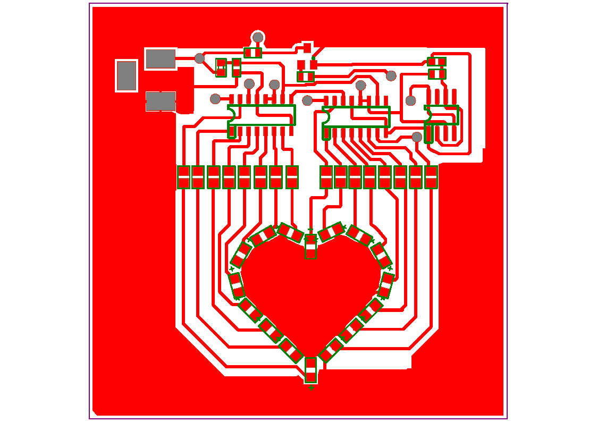 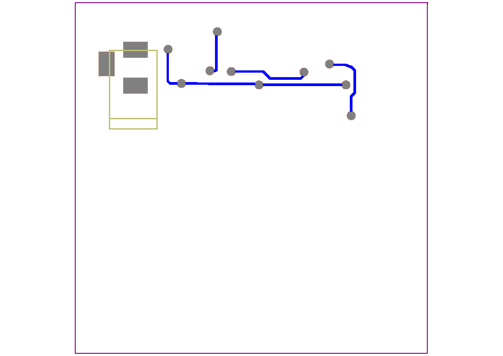{kind=link}
{kind=link}
Hình ảnh 3D:
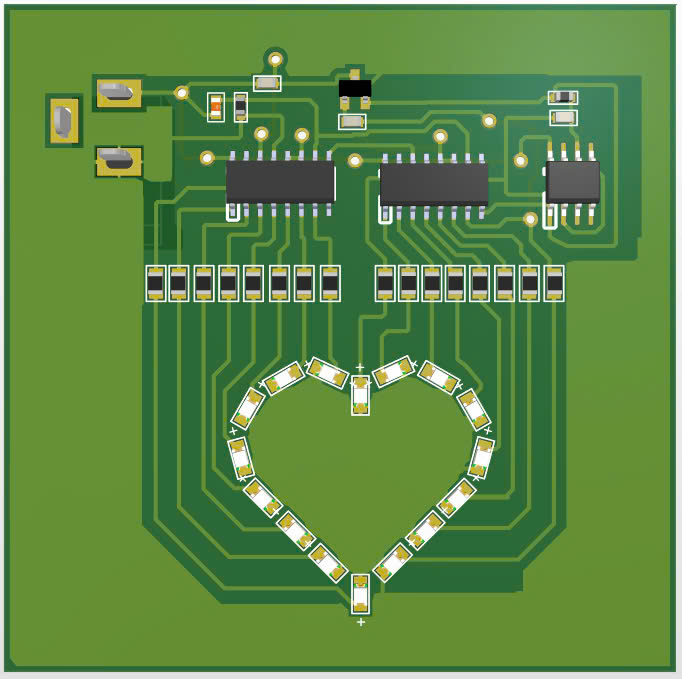 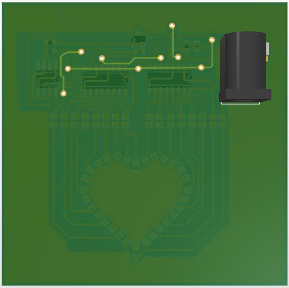{kind=link}
{kind=link}
File PCB tại đây:
File Board in tại đây:
Bước 2: Trang bị kĩ năng cần thiết
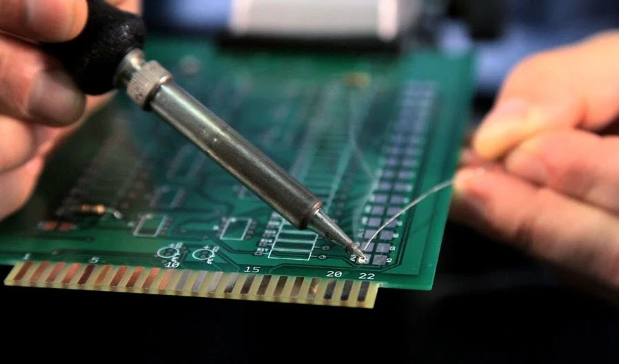{kind=link}
Trước khi bắt đầu làm mạch này, bạn cần trang bị một số kĩ năng và kiến thức sau:
Kiến thức cơ bản về điện tử.
Kỹ năng hàn mạch.
Cách sử dụng đồng hồ đo điện (VOM).
Bạn cũng cần kiên nhẫn và có nhiều thời gian rảnh.
Bước 3: Lên danh sách linh kiện
 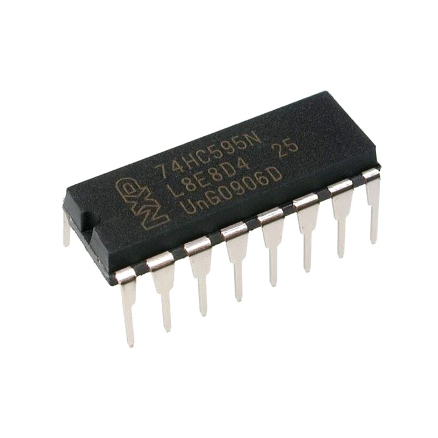
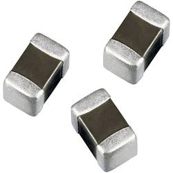
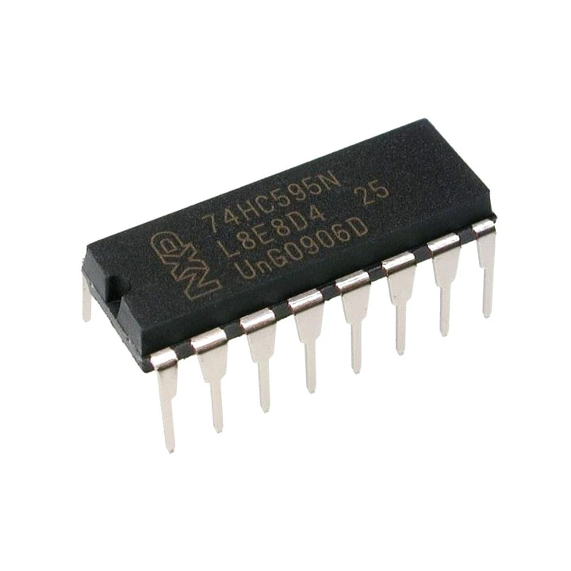
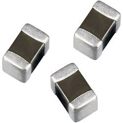
{kind=link}
{kind=link}
1 Phíp đồng
2 x 74HC595 (SOP-16)
1 x Nx555 (SOP-8)
1 x C1815 (SOT-23)
19 x 1kΩ (0805)
1 x 10kΩ (0805)
1 x 1µF (0805)
1 x 10µF (0805)
16 x LED SMD (0805)
1 x Jack DC cái 3.5mm x 1.3mm loại cắm
BOM Lists đầy đủ tại đây:
Bước 4: Gia công mạch
Dụng cụ cần thiết:
Mạch in đã in bằng giấy in nhiệt
Phíp đồng
Bàn là
Dao cắt mạch
Giấy nhám
Dung dịch ăn mòn
Các bước thực hiện:
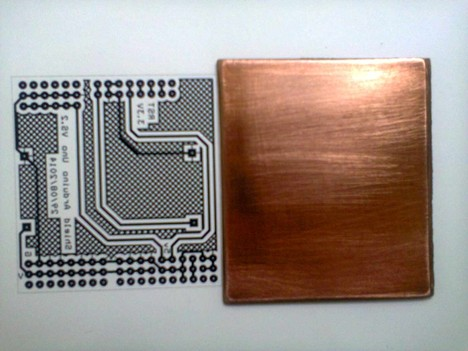
Bước 1: Chuẩn bị mạch in trên giấy bóng: Sau khi vẽ PCB trên phần mềm, xuất file để in mạch trên giấy bóng
Note
Lưu ý, phải dùng máy in laser mới được, nên ra hỏi tiệm in xem người ta có in được giấy in mạch không
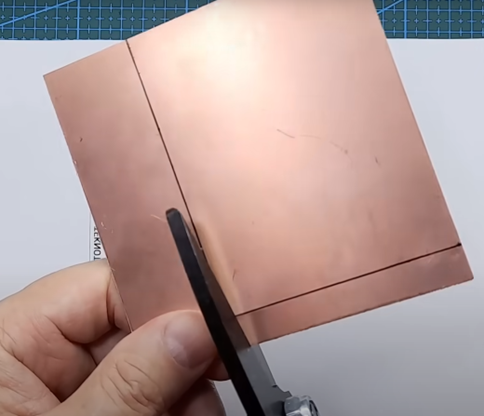
Bước 2: Cắt và vệ sinh phíp đồng: Đo kích thước mạch và cắt, nên để dư 3 - 5mm. Nên đánh dấu vị trí khu vực cần cắt. Sử dụng đầu nhọn của lưỡi dao để cắt từng cạnh (ở cả 2 mặt). Sau khi cắt đủ sâu có thể bẻ. Phíp đồng cần được vệ sinh để mực in trong quá trình chuyển mạch có thể chuyển lên hết PCB . Vệ sinh bằng cách chà giấy nhàm, sau khi chà không đặt tay lên bề mặt
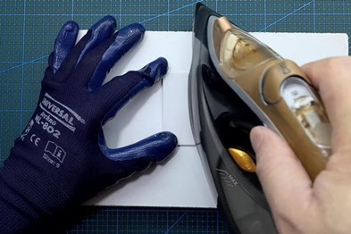
Bước 3: Chuyển mạch (toner transfer): Cắt mạch in trên giấy bóng và đặt lên phíp đồng đã cắt và vệ sinh (mặt in mực tiếp xúc với mạch đồng) rồi tiến hành ủi mạch đến khi đảm bảo lớp mực trên giấy đã bám hết lên phíp đồng. Nhiệt từ bàn ủi sẽ làm chảy lớp mực trên giấy bóng và chuyển xuống mặt đồng, bảo vệ những khu vực mà ta mong muốn không bị ăn mòn
Note
Lưu ý, trong quá trình ủi, có thể do tác dụng nhiệt không đều hoặc vệ sinh phíp đồng không sạch mà có vài mảng mực sẽ không bám lên phíp đồng, ta dùng bút lông dầu để tô lại
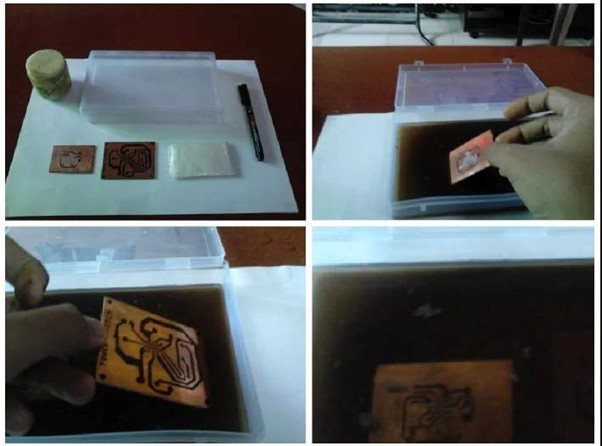
Bước 4: Ăn mòn (Etching) Đem mạch đi nhúng với dung dịch ăn mòn, đến khi lớp đồng không được phủ mực bị rửa trôi hết. Những phần không được mực in bảo vệ sẽ bị ăn mòn, chỉ chừa lại đường mạch mong muốn. Trong quá trình nhúng nên lắc board mạch để tăng tốc độ phản ứng (có thể dùng nhíp để lắc board mạch hoặc khoan lỗ ở một góc và xỏ dây vào)
Note
Lưu ý, để đảm bảo an toàn cho bản thân và môi trường khi sử dụng hóa chất, không đổ hóa chất ăn mòn xuống cống
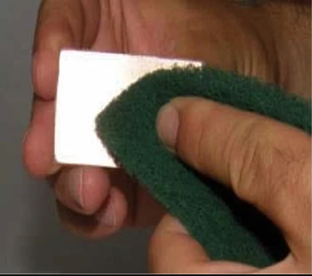 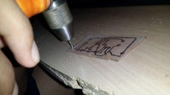
Bước 5: Vệ sinh, khoan lỗ và bảo quản mạch: Sau khi ngâm mạch, dung dịch ăn mòn không tác dụng tới lớp mực, để loại bỏ lớp mực này, ta dùng giấy nhám để chà sạch hoặc dùng axeton để lau đi. Đối với các linh kiện chân cắm, lựa chọn mũi khoan có kích thước thích hợp (mũi khoan: 0.8mm - 1mm). Lớp đồng để lâu trong không khí sẽ bị oxy hóa gây mất thẩm mỹ, do đó ta trộn axetol và nhựa thông lại để phủ lên PCB
{kind=link}
{kind=link}
{kind=link}
{kind=link}
{kind=link}
{kind=link}
Bước 5: Hàn mạch
Hướng dẫn hàn:
Tham khảo link sau: Link hướng dẫn hàn
- Thứ tự hàn:
- Hàn theo khối:
Nên hàn khối nguồn trước, sau đó test điện áp ngõ ra của khối nguồn.
Tiếp tục hàn các khối khác.
- Hàn theo loại linh kiện:
Hàn linh kiện dán trước, sau đó hàn linh kiện cắm.
Hàn linh kiện nhỏ trước, sau đó hàn linh kiện lớn.
Hàn linh kiện nhiều chân trước (những IC từ 5 chân trở lên).
Hàn từ trong ra ngoài, tránh vướng mỏ hàn khi hàn.